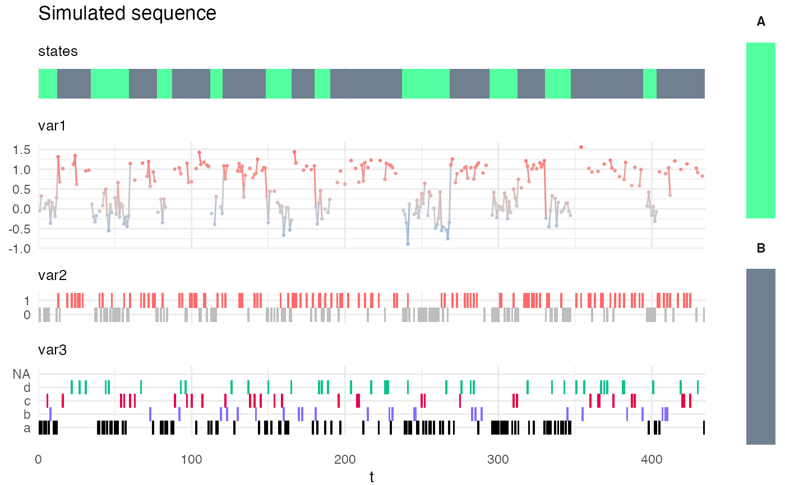
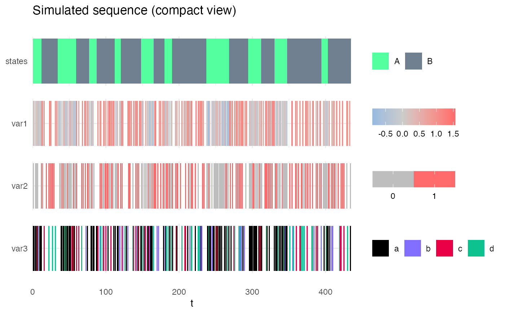

Plots a single sequence of observation.
plot_hsmm_seq(
X,
model,
title = NULL,
show_state_diff = TRUE,
compact_view = FALSE,
add_color_legend_in_compact_view = TRUE,
add_state_color_legend = FALSE,
selection = data.frame(),
verbose = FALSE
)
Arguments
| X |
a data.frame specifying the sequence of observation.
Should contains data for only one sequence. Each column is a variable.
Any column starting with the characters state is considered to be a state sequence and will be displayed on top of the observations.
Any column starting with the characters state_prob is considered to be the probability associated with the corresponding state at each time-point. That column will be used to alter the transparency of the state sequence visualization.
Several state columns can be provided. For example: "state_ground_truth" and "state_Viterbi".
A state probability can be specified for each of the state column by providing, for example, the columns "state_prob_ground_truth" and "state_prop_Viterbi". |
| model |
a hsmm or hsmm_spec object specifying the model associated with the observation sequence. |
| title |
(optional) a character specifying the title of the plot. |
| show_state_diff |
(optional) a logical specifying if, in the case there are two "state" columns, a third line showing the agreement between these two columns should be displayed.
Default value is TRUE. This is useful if one desires to compare a decoded sequence with the ground truth or state sequence resulting from the decoding of models with different parameters. |
| compact_view |
(optional) a logical specifying if the visualization of the observed variables should be compact,
i.e. using color-coding only to display each variable on a single line. |
| add_color_legend_in_compact_view |
(optional) a logical specifying if the color legend should be added for each variable when displaying time-series in compact view. Default is TRUE. |
| add_state_color_legend |
(optional) a logical specifying if the color legend for the model latent states should be printed. Default value is FALSE. |
| selection |
(optional) a data.frame specifying the start and end of a "selection", i.e. a part of sequence that needs to be highlighted.
If not NULL (the default value), this option allows to display a transparent rectangle across all state and variable lines of a color of a given state.
The data.frame must have the following columns: start, end, state (integer). |
| verbose |
(optional) a logical specifying if the internal steps of the function should be printed. |
Value
a ggplot object.
Examples
plot_hsmm_seq(X = Xsim, model = my_model, title = "Simulated sequence", add_state_color_legend = TRUE)

plot_hsmm_seq(X = Xsim, model = my_model, title = "Simulated sequence (compact view)", compact_view = TRUE)
